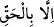
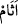
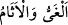

Varlık sayfasına yanlış harfler yazıyorsun, niçin?
“Allah’ın haram kıldığı cana haksız yere kıymazlar” “Allah’ın haram kıldığı”
Allah’ın öldürmeyi haram kıldığı demektir. Haram kılma konusunda mübâlağa için
muzâf hazfedilmiş, muzâfun ileyh onun yerine getirilmiştir. Kastedilen mü’minin yahut
kendisine eman verilen kimsenin canıdır.
“
” ancak öldürülmesini mübah kılan bir hak ile olan müstesnâdır, demektir.
Yâni, canın hürmetini ve korunma hakkını ortadan kaldıran bir sebep dışında herhangi
bir sebeple cana kıymazlar. Mesela bir kimse birini öldürse kısas edilir. Evli iken zina
ederse recmedilir. Dinden dönerse veya yeryüzünde fesad çıkarırsa öldürülür.
“ve zina etmezler.” Zina, şer’i bir akid/nikâh olmaksızın bir kadınla cinsi
münâsebette bulunmaktır.
Bilesin ki Allah Teâlâ has kullarının tevâzu, kötülüğe iyilikle mukabele etme, geceyi
ihyâ etme, duâ ve harcarken orta yolu tutma gibi tâatlerin esası olan hususları yerine
getirdiklerini belirttikten sonra Allah’tan başkasına tapmak, haram kılınan canı
öldürmek ve zina gibi ana günahları onlardan nefyedip uzaklaştırmıştır. Bu, onların
îmanlarının kemâlini göstermek içindir. Çünkü îmân, fazîletli amellerle süslenerek ve
kötülüklerden uzaklaşarak kemale erer. Yine bu, daha sonraki âyette zikredilen ecir ve
sevabın bu hasletleri şahsında toplayan kimseye vaad edildiğini hissettirmek, bunların
zıtlarının da kâfirler için olduğunu kinâye yoluyla duyurmak içindir. Yâni Rahman’ın
kulları, kâfirlerin tamamını işledikleri bu büyük günahları işlemezler. Kâfirler ise Allah
Teâlâ’ya ortak koşmanın yanında öldürülmesi haram olan cana kıymaya devam ederler.
Kız çocuklarını diri diri toprağa gömmek de buna dâhildir. Yine onlar zinaya
düşkündürler. Çünkü onlara göre zina mübahtır.
Abdullah b. Mes’ud (r.a.)’dan rivâyet edildiğine göre o şöyle demiştir: Rasûlullah
(s.a.)’e: “Hangi günah daha büyüktür?” diye sordum. “Seni yarattığı halde Allah’a
ortak koşmandır?” buyurdu. “Sonra hangisidir?” dedim. “Seninle beraber yemek
yiyecek diye çocuğunu öldürmendir.” buyurdu. “Sonra hangisidir?” dedim. “Komşunun
eşiyle zina etmendir.” buyurdu.[259]
et-Te’vîlâtü’n-Necmiyye’de der ki: “Onlar zina etmezler.” Yâni dünya kocakarısında
nefsanî ve hayvânî bir şehvetle tasarrufta bulunmazlar. Bilakis onda tasarrufları avâmın
hâlinin aksine olarak Allah içindir, Allah uğrunda ve Allah iledir.”
“Bunları yapan,” ağırlık ve mânâ olarak vebal ve cezâ gibi “günahı”nın karşılığını
ve müeyyidesini “bulur;” Kendi işlediği günahın cezâsını görür.
el-Kâmûs’ta der ki: “ ” cehennemde bir vâdidir. Cezâ mânâsına gelir. Bir hadiste “
” içlerine cehennem halkının irinlerinin aktığı iki kuyudur.”[260]
buyrulmuştur.